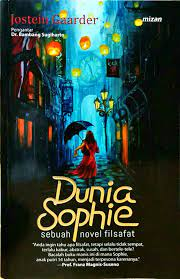

Buku ini pada awalnya menceritakan tentang sebuah survei kekhawatiran
nasional yang semakin masif sekaligus menyajikan tentang sekilas
kehidupan si penulis yang dipenuhi oleh emosi negatif yang berlebihan.
Lalu, lebih dari 2000 tahun lalu sebuah mazhab filsafat menemukan akar
masalah dan solusi dari banyaknya emosi negatif. Ya, Stoisisme atau
filosofi Stoa, namun penulis lebih memperkenalkannya dengan “Filosofi
Teras” yang merupakan filsafat Yunani-Romawi Kuno yang dapat membantu
kita dalam mengatasi emosi negatif serta menghasilkan mental seseorang
menjadi tangguh dalam menghadapi naik turunnya kehidupan. Dalam buku
tersebut, filsafat Stoa digambarkan secara sederhana dengan inti
dikotomi kendali nasib manusia sehingga dari dikotomi kendali tersebut,
manusia dapat menentukan hal-hal yang dapat membuatnya bahagia maupun
tidak. Namun, Wiliam Irvine menawarkan trikotomi kendali di mana memuat
apa yang menjadi kendali kita, tidak menjadi kendali kita, dan juga
menjadi bagian dari kendali kita.
Buku Filosofi Teras ini sangat berbeda dengan buku filsafat lainnya
karena filosofi teras (Stoa) digambarkan dengan analogi kejadian yang
real di kehidupan sehari-hari dan penggunanan bahasa yang sesuai dengan
Generasi Milenial dan Gen-Z. Hal yang menarik dari Filosofi Teras ini
terletak pada tujuannya yaitu hidup dalam ketenangan dan terbebas dari
emosi negatif. Oleh karena itu, pada setiap bab Filososfi Teras terdapat
pelajaran yang diambil, salah satunya yaitu dalam menjalani kehidupan
harus selaras dengan alam. Di mana kehidupan berjalan sesuai kehendak
pencipta-Nya dan selaras dengan alam itu berarti kita harus mengandalkan
akal kita agar tidak terbawa arus yang menyimpang. Apalagi sekarang ini
banyak di antara kita yang menggunakan medsos dan sering ditemui berita
hoaks, sehingga kita tidak boleh terbawa emosi dan tidak baperan. Satu
hal yang haru kita ingat, jangan terlalu memikirkan hal yang belum
terjadi ke depannya, biarkan berjalan sebagaimana mestinya, namun tetap
diiringi dengan effort supaya mendapat hasil yang maksimal. Secara
keseluruhan buku ini menarik dan recommended banget untuk dibaca.
Laut Bercerita by Leila Salikha Chudori
Laut Bercerita menceritakan terkait perilaku kekejaman dan kebengisan
yang dirasakan oleh kelompok aktivis mahasiswa di masa Orde Baru. Tidak
hanya itu, novel ini pun merenungkan kembali akan hilangnya 13 aktivis,
bahkan sampai saat ini belum juga ada yang mendapatkan petunjuknya.
Cerita dalam novel Laut Bercerita terbagi menjadi dua bagian dengan
jarak waktu yang jauh berbeda. Adapun bagian pertama diceritakan melalui
sudut pandang tokoh bernama Biru Laut beserta para kawan sesama
aktivisnya seraya menyelesaikan visi atau tujuan mereka. Sementara pada
bagian kedua, kisahnya diambil dari sudut pandang Asmara Jati, adik dari
Laut yang mempunyai tujuan atau visi yang cenderung berlainan dengan
Laut.
Ikigai by Hector Garcia Puigcerver
Buku ini seolah hadir sebagai penawar akan berbagai keresahan mengenai
hidup yang kita rasakan. Disajikan dengan bahasa yang sederhana tanpa
adanya sugar coated explanation dapat menjadikan buku ini sebagai bahan
refleksi yang tepat bagi kita yang hidup di tengah era globalisasi di
mana semuanya dituntut untuk bergerak dengan cepat. Keseluruhan isi dari
buku ini seolah menyuruh kita untuk sedikit melambat dengan mengikuti
flows dalam diri masing-masing sehingga kita dapat merenungkan dan
menikmati bagaimana kehidupan berlalu setiap detiknya. Yang ingin
ditekankan penulis di sini adalah agar kita fokus dalam menjalani
kehidupan saat ini tanpa merasa terkekang dengan masa lalu dan tanpa
dihantui masa depan yang belum pasti.
Rumusan dari 4 elemen dasar Ikigai yang saling terkait dan 10 aturan
dalam Ikigai yang dituliskan penulis memudahkan kita sebagai pembaca
untuk mempraktikkan rahasia hidup bahagia di kehidupan sehari-hari. Saat
mencoba perlahan-lahan untuk mengubah pola hidup ke arah yang lebih baik
sesuai dengan konsep Ikigai maka kedamaian akan menyelimuti diri kita.
Rasanya hidup ini bukan sekadar mengejar hasrat sesaat saja, tetapi
hidup ini memiliki makna mendalam yang di dalamnya terdiri dari berbagai
hal kecil yang tanpa kita sadari merupakan sesuatu yang berharga.
Percayalah dengan menemukan Ikigai maka kita akan termotivasi untuk
terus bergerak meskipun itu untuk pencapaian yang kecil.
Rasa by Tere Liye
Novel Rasa Tere Liye ini recommended dibaca mulai usia SMA hingga
dewasa. Bahasanya mengalir, ceritanya menghadirkan banyak rasa, serta
kita bisa mendapatkan banyak inspirasi dan hikmah di dalamnya.
Bagi kamu yang masih terjebak dengan masa lalu, membenci apa yang telah
terjadi, dan belum bisa memaafkan, novel ini bisa menjadi teman yang
baik untuk belajar mengelola rasa itu. Novel ini mengajak kita untuk
memeluk erat semua rasa marah, benci, dan sakit hati. Novel ini mengajak
kita untuk mengikhlaskan, memeluk masa lalu dengan penerimaan. Dan
ketika kita telah menerima semua takdir Tuhan, kita akan lebih bahagia
mengenang masa lalu dan lebih siap menapaki masa depan.

Dunia Sophie by Jostein Gaarder
Bagi pecinta buku bergenre fantasi sekaligus filsafat, buku Dunia Sophie
bisa menjadi alternatif pilihan bacaan. Buku keempat karya Jostein
Gaarder yang dibuat pada tahun 1991 ini merupakan salah satu karya yang
popular di Norwegia. Kali ini kita akan membahas lebih dalam buku Dunia
Sophie.
Buku ini bercerita tentang seorang gadis bernama Sophie Amundsen yang
tinggal hanya berdua dengan ibunya di pinggiran kota di Norwegia.
Sebagai gadis umur empat belas tahun Sophie terbiasa dengan misteri
kehidupan sampai ia menemukan surat berisi “Siapakah dirimu? Dari mana
asalnya dunia?” yang dialamatkan pada Hilde Møller Knag, d/a Sophie
Amundse.
Lewat pertanyaan sederhana ini Sophie memulai petualang mencari jawaban
atas pertanyaan-pertanyaan yang tertulis dalam surat misterius tersebut.
Dan siapa sangka Sophie beruntung dapat bertemu dan belajar langsung
dari si pengirim surat sekaligus seorang filsuf berumur lima puluh
tahun, Alberto Knox.
Lewat buku Dunia Sophie pembaca akan dibawa untuk mengenal lebih dalam
mengenai pertanyaan yang selama ini tidak pernah dipertanyakan. Dari
pertanyaan tersebut, pembaca akan dibawa memahami siapa dirinya sendiri
dan dari mana datangnya dunia ini.
Buku Dunia Sophie akan menambah wawasan Anda akan semakin bertambah
dengan kisah para filsuf yang berusaha menemukan jawaban yang selama ini
menjadi misteri bagi mereka. Kelebihan buku ini adalah memaparkan setiap
pemikiran filsuf dari setiap era, mulai dari klasik hingga kontemporer
menggunakan bahasa yang mudah dipahami oleh orang yang sama sekali belum
pernah belajar filsafat.
Kekurangan buku ini adalah alurnya yang terlalu berbelit-belit membuat
pembaca menjadi bosan. Apalagi buku Dunia Sophie tidak memiliki anti
klimaks yang membuat pembaca menjadi kaget dengan misteri siapakah Hilde
Møller Knag yang sebenarnya dan apa hubungannya dengan Sophie.
Namun, buku ini akan sangat direkomendasikan bagi Anda yang tertarik
membaca novel fantasi dan filsafat secara bersamaan. Filsafat yang
dihadirkan dalam buku ini akan membawa pengetahuan awal mengenai diri
sendiri, asal dunia dan pemikiran tokoh-tokoh filsafat.